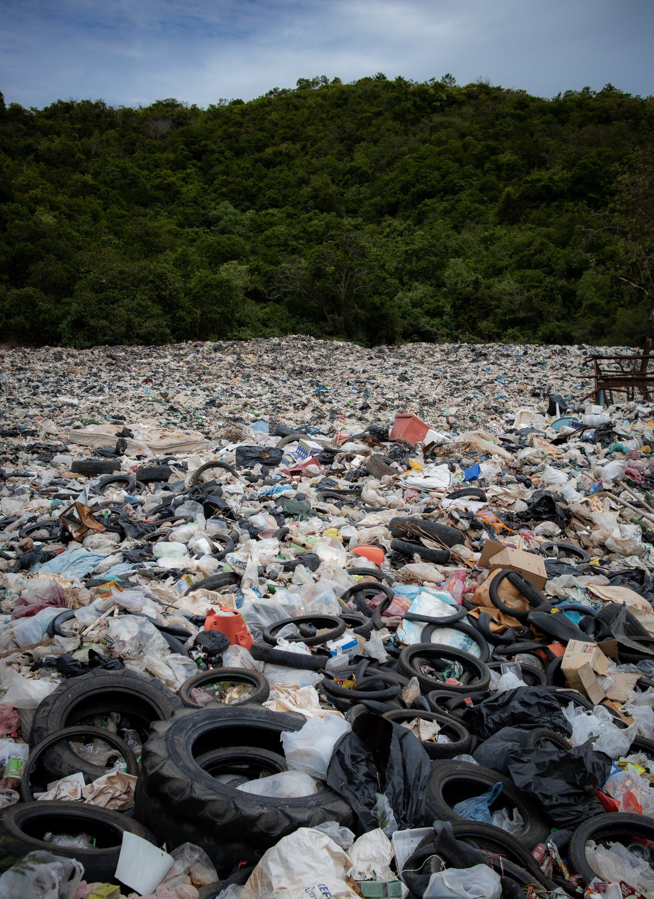

You grab the bag with your teeth and start to run away but as you do, all the contents of the bag fall out. Turns out, there was a lot of trash in it (a lot more than what looks physically possible to fit inside of the bag) and now it's everywhere. Thankfully, that provided the perfect obstacle to stop the cool cats from chasing you. They seemed too cool to even try and chase you anyways, though.